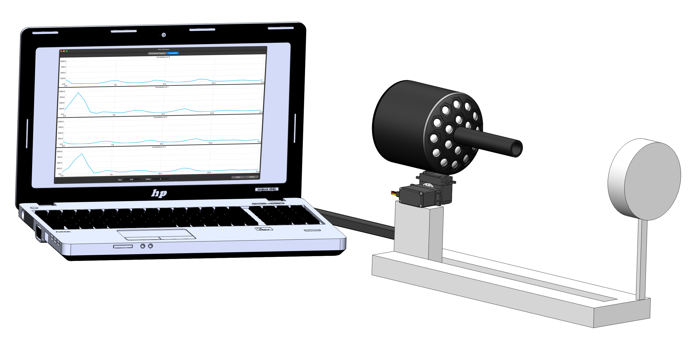
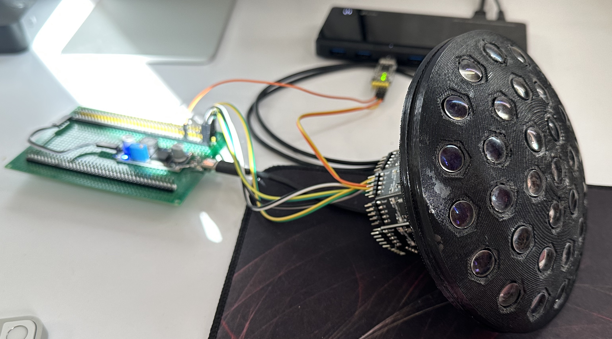
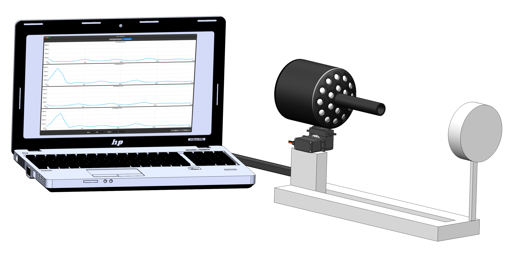
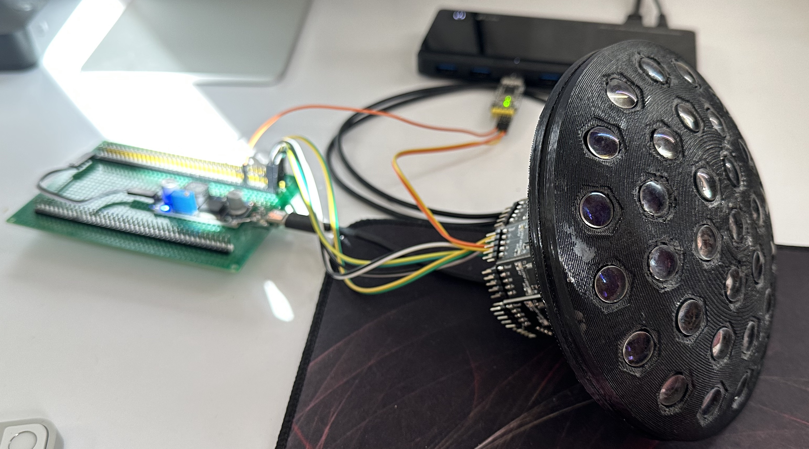

This project presents a revolutionary bio-inspired vision system that mimics the compound eyes of insects for autonomous navigation applications. The system addresses critical limitations of traditional cameras by implementing true parallel processing architecture.
The multi-channel faceted system consists of independent elements, each containing its own optical system, photodetectors, signal amplifier, and microcontroller. This design enables simultaneous angular velocity measurements across a field of view exceeding ±90 degrees, performing over 1000 measurements per second using economical hardware.
Unlike conventional matrix cameras with sequential signal readout, each faceted element operates independently and processes data in parallel. This approach eliminates the bottleneck of limited processing channels compared to millions of photosensitive elements in traditional systems.
Key advantages include panoramic awareness without mechanical scanning, high system reliability through redundant independent elements, and real-time collision threat detection through focus coordinate calculations. The system enables GPS-free navigation via visual odometry, measuring displacement vectors in three-dimensional space.
Experimental validation on vehicles confirmed successful obstacle detection when threats occupied significant portions of the field of view. The system demonstrated practical applicability for autonomous navigation, particularly valuable for multicopters and robotic applications in GPS-denied environments.
The bio-inspired architecture provides superior performance for dynamic obstacle avoidance, offering wide-angle coverage, rapid response times, and robust operation even with damaged components - characteristics that have proven successful in nature for over 500 million years.